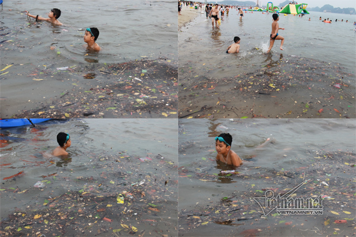
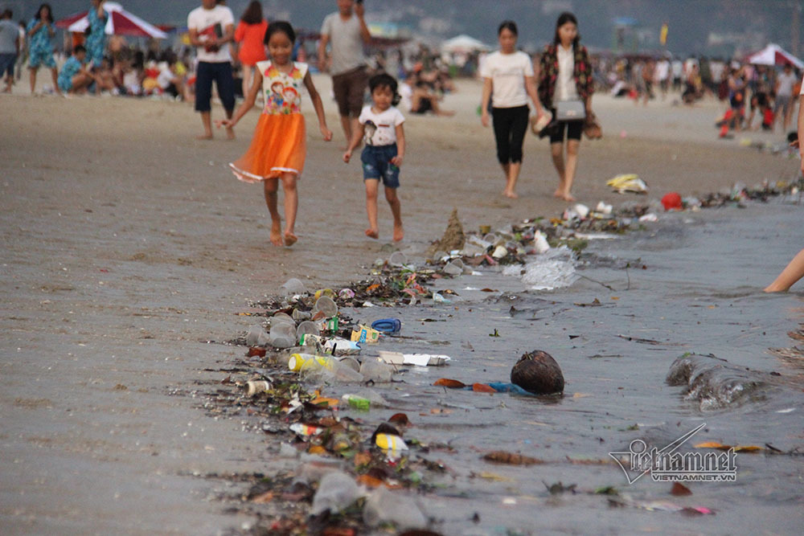
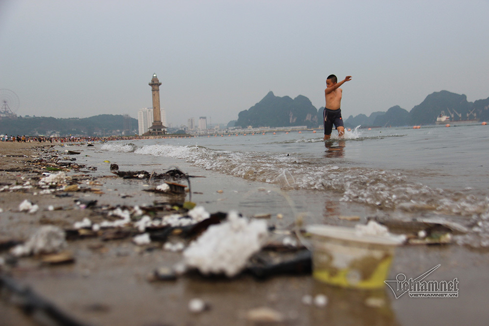

Bãi tắm Hạ Long là bãi biển duy nhất trong đất liền được cấp phép cho du khách tắm, tuy nhiên nhiều người tới đây ngán ngẩm khi thấy rác thải dồn cả đống.
Trẻ hồn nhiên ngụp lặn với dòng rác nổi lềnh phềnh.
Rác thải trôi dạt vào bờ đủ chủng loại, từ cây cối, chai nhựa cho đến túi nilon. Cuộn theo rác là dòng nước đục ngầu không được xử lý.
Nhiều du khách không dám đặt chân xuống biển. Số khác vẫn bất chấp vạch rác ra rồi bơi ra xa để hoà mình với dòng nước mát.
"Nhìn bãi biển rác thế này, nước đục nữa thì ai dám xuống tắm, tôi chỉ dám cho con chơi trên bãi cát thôi", chị Lê Thị Oanh (du khách đến từ Bắc Giang) ngán ngẩm.
Rác chủ yếu là chai nhựa, túi nilon.
Nước biển đục ngầu, vô số rác dạt vào bờ
Theo Sở Du lịch Quảng Ninh, ngày 30/4 có trên 75.000 lượt khách đến Hạ Long, trong đó rất đông khách Trung Quốc, Hàn Quốc...
Đang đi trên đường làng ở xã Nghĩa Hải (Nghĩa Hưng, Nam Định), cô gái lái ô tô nhấn nhầm chân ga, khiến cả 5 người lao xuống một con mương ở vệ đường.
nội dung bên phải
{kind=link}
{kind=link}
{kind=link}